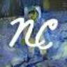

Для «AI-powered 3D Marketplace» сначала определите свою задачу и требуемый результат. Карточка относится к направлению «3D».
КАТАЛОГ AI-СЕРВИСОВ
Для художников
Раздел «Для художников»: варианты ИИ для этой задачи, описания возможностей и переходы к обзорам. Сравните несколько решений на одинаковом примере.
16664AI-сервисов
312категорий
Практика в Молекуле
Поиск композиции для живописной сцены
Разработайте визуальный набросок пейзажа перед собственной художественной работой. Опишите главный мотив и соотношение крупных пятен; используйте результат для обсуждения композиции, проверяя, помогает ли выбранный свет направлять внимание к основному объекту.
Этапы выполнения
- Опишите мотив и палитру сцены
- Оцените расположение крупных световых пятен
Пример запроса
Найти композицию пейзажаНарисуй композиционный набросок старого причала в тумане: одна лодка на переднем плане, дальний берег едва виден. Ограниченная серо-синяя палитра, крупные световые пятна, без мелкой декоративной детализации.

Инструменты224

AIArtГенерация изображений
«AIArt» готовит визуальные материалы по заданию.

ArtblastAIГенерация изображений
«ArtblastAI» представлен в разделе «Генерация изображений». При выборе проверьте нужную операцию и условия работы с результатом.

ArtBot AIГенерация изображений
Для «ArtBot AI» сначала определите свою задачу и требуемый результат. Карточка относится к направлению «Генерация изображений».

A
ArtiScribe AIСоздание текстов
ArtiScribe AI помогает художникам писать описания своих произведений и подписи к ним. Помощник предназначен для публикаций соцсетей и сообщений электронной почты. Подготовка текста дополняет представление визуальной работы, связывая её содержание и выбранный автором способ общения с читателем или адресатом.

Colorin AIГенерация изображений
«Colorin AI» подготавливает контурные изображения для раскрашивания.
D
Deep AnimeГенерация изображений
«Deep Anime» представлен в разделе «Генерация изображений». При выборе проверьте нужную операцию и условия работы с результатом.

D
DSNRГенерация изображений
«DSNR» готовит визуальные материалы по заданию.

I
ImageCreator for PSГенерация изображений
ImageCreator for PS добавляет к Photoshop средства ИИ для создания иллюстраций. Плагин предлагает редактирование и несколько управляющих моделей, включая ControlNet. Пользователь может готовить визуальный материал внутри редактора, сочетая генерацию с изменением изображения и выбранными инструментами управления результатом.

i
inpilot AIГенерация изображений
«inpilot AI» готовит визуальные материалы по заданию.

J
Jasper ArtГенерация изображений
«Jasper Art» готовит визуальные материалы по заданию.

Neural CanvasГенерация изображений
«Neural Canvas» готовит визуальные материалы по заданию. Дополнительно «Neural Canvas» помогает составлять визуальные панели комикса.

O
OksuroПромты и промт-инжиниринг
«Oksuro» готовит визуальные материалы по заданию.

P
Pixar PersonaДизайн
Для «Pixar Persona» сначала определите свою задачу и требуемый результат. Карточка относится к направлению «Дизайн».

PixelfyГенерация изображений
«Pixelfy» готовит визуальные материалы по заданию.
PlayArtiГенерация изображений
Для «PlayArti» сначала определите свою задачу и требуемый результат. Карточка относится к направлению «Генерация изображений».

P
PUMPG - Midjourney prompt generatorГенерация изображений
Сравнивать «PUMPG - Midjourney prompt generator» с другими инструментами раздела «Генерация изображений» удобнее на одинаковом исходном материале.

Z
ZizotoГенерация изображений
Zizoto создаёт изображения с использованием модели Stable Diffusion и предлагает социальную среду для авторов. Пользователи могут взаимодействовать в сообществе художников. Печать плакатов из созданных работ дополняет генерацию, связывая подготовку цифрового изображения и его дальнейшее представление в физическом формате.

EverArt AIГенерация изображений
«EverArt AI» готовит визуальные материалы по заданию.

E
Eye for AIГенерация изображений
«Eye for AI» готовит визуальные материалы по заданию.

F
Foxify.ArtДизайн
Foxify.Art предоставляет онлайн-редактор изображений с участием ИИ для разных визуальных задач. Среди направлений есть художественные материалы и публикации соцсетей, а также презентации и плакаты. Подготовка логотипов дополняет набор сценариев, связывая создание изображения с выбранным автором способом использования графики.

F
FreemidjourneyГенерация изображений
Freemidjourney генерирует изображения по текстовому запросу с использованием ИИ. Пользователь формулирует словесную идею, которая становится основой визуального результата. При выборе картинки полезно сверять основной сюжет, предметы и детали с исходным описанием, рассматривая полученную версию как вариант заданного образа, а не самостоятельное подтверждение фактов.

L
Live3d Anime GeneratorГенерация изображений
«Live3d Anime Generator» создаёт портретные и аватарные изображения. Дополнительно «Live3d Anime Generator» готовит визуальные материалы в аниме-оформлении.

Night CaféГенерация изображений
«Night Café» готовит визуальные материалы по заданию.

NVIDIA CanvasГенерация изображений
Сравнивать «NVIDIA Canvas» с другими инструментами раздела «Генерация изображений» удобнее на одинаковом исходном материале.
NyxГенерация изображений
«Nyx» готовит визуальные материалы по заданию.
S
SoraPix AIГенерация изображений
«SoraPix AI» готовит визуальные материалы по заданию.

TattooGPTГенерация изображений
TattooGPT генерирует эскиз татуировки по текстовому описанию с помощью ИИ. Пользователь может выбирать стили и примерять изображение на фотографии с дополненной реальностью. Трафареты и шрифты дополняют подготовку рисунка, связывая первоначальный замысел с дальнейшим рассмотрением его визуального оформления.

U
USPГенерация изображений
«USP» готовит визуальные материалы по заданию.

6pen ArtГенерация изображений
6pen Art подготавливает изображения и ИИ-аватары с использованием моделей глубокого обучения. Среди описанных технологий есть DALL-E и Stable Diffusion. Платформа объединяет эти средства для визуальной работы, позволяя пользователю рассматривать создание художественного изображения и цифрового образа в рамках своего проекта.
A
AI Funko PopГенерация изображений
«AI Funko Pop» готовит визуальные материалы по заданию.

AnimeBuilderГенерация изображений
AnimeBuilder подготавливает аниме-варианты изображений с помощью ИИ и текстового ввода. Пользователь может выбирать из нескольких стилей обработки. Онлайн-инструмент связывает исходную картинку и описанный замысел, чтобы рассматривать выбранную визуальную подачу при создании стилизованного изображения по своему запросу.

A
Arteus AIГенерация изображений
«Arteus AI» готовит визуальные материалы по заданию.

AutoDrawГенерация изображений
AutoDraw от Google помогает подбирать рисунки средствами машинного обучения. Инструмент относится к рисованию и предлагает визуальные варианты в ходе творческой работы. Пользователь получает помощь в оформлении изображения, когда собственный набросок или замысел нужно связать с предложенным системой рисунком.
BrickifyMeГенерация изображений
Для «BrickifyMe» сначала определите свою задачу и требуемый результат. Карточка относится к направлению «Генерация изображений».

ClioГенерация изображений
Для «Clio» сначала определите свою задачу и требуемый результат. Карточка относится к направлению «Генерация изображений».

D
Diffusion ArtГенерация изображений
Для «Diffusion Art» сначала определите свою задачу и требуемый результат. Карточка относится к направлению «Генерация изображений».

DreamPic AIГенерация изображений
«DreamPic AI» готовит визуальные материалы по заданию.


GencraftГенерация изображений
Gencraft используют, чтобы получать изображения из словесного задания. Ещё одно направление работы: менять фотографии с учётом выбранного оформления.

G
Glitch Image GeneratorГенерация изображений
«Glitch Image Generator» готовит визуальные материалы по заданию.
H
HeroPackГенерация изображений
«HeroPack» создаёт портретные и аватарные изображения.
J
JelliДизайн
Для «Jelli» сначала определите свою задачу и требуемый результат. Карточка относится к направлению «Дизайн».

J
Journey AI artГенерация изображений
«Journey AI art» готовит визуальные материалы по заданию.

KiveЗаметки
Kive помогает организовывать творческие материалы в общей визуальной библиотеке с участием ИИ. Пользователи собирают идеи и делятся ими внутри одного пространства. Продукт ориентирован на авторов визуального контента, связывая исследовательскую подготовку и хранение замыслов для дальнейшей работы над проектом.
L
LegenDrawГенерация изображений
«LegenDraw» создаёт портретные и аватарные изображения.
M
Magic Art BotРедактировать изображение
«Magic Art Bot» подготавливает изображения для стикеров. «Magic Art Bot» помогает исправлять и оформлять фотографии.

Midjourney Art AI GeneratorГенерация изображений
«Midjourney Art AI Generator» готовит визуальные материалы по заданию.
P
PixelmindГенерация изображений
«Pixelmind» представлен в разделе «Генерация изображений». При выборе проверьте нужную операцию и условия работы с результатом.
Страница 4 из 5